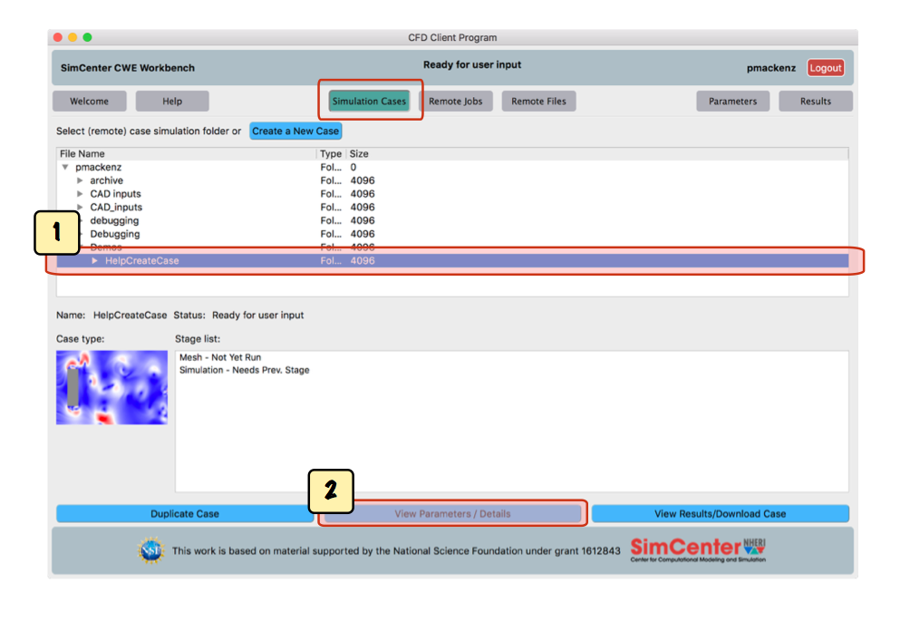
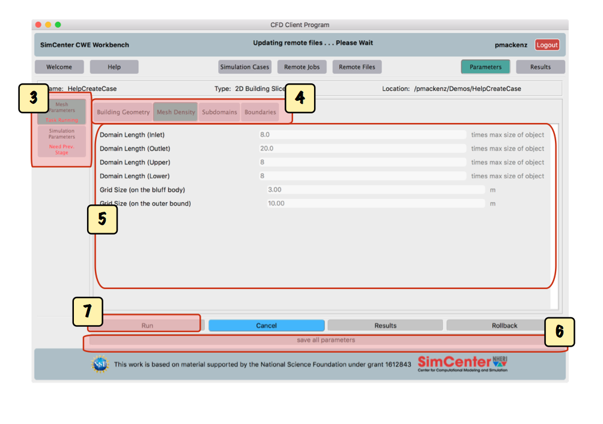

Step 3: Create a Mesh
Once the case is created, you can generate the mesh.
-
Start from the 'Simulation Cases' screen:

-
Select the folder containing the case in the 'Simulation Cases' tab.
-
Click 'View Parameters/Details' to go to the parameters screen.

-
Parameters are grouped by task on the left side of the parameter screen.
Every case template initiates tabs for 'Mesh Parameters' and 'Simulation Parameters'.
Note: The mesh needs to be generated before the simulation can be run.

-
For your first case, we suggest using a simple geometry that is provided by the CWE tool,
by selecting it next to 'Select Geometry File'. Later, you can upload your own geometries for simulation.

-
Users can set mesh density, subdomains and bundaries for mesh generation.
CWE prevides default settings for both Mesh Parameters and Simulation Parameters.
Users can make changes to better fit their simulations.
-
At any time, you can click 'save all parameters' to save your changes.
-
Click 'run' to begin generating your mesh.
Note: Under the 'remote jobs' tab,
you will be able to view the list of agave jobs in progress and monitor the
eventual completion of your mesh.
Continue to Step 4: Run Simulation.